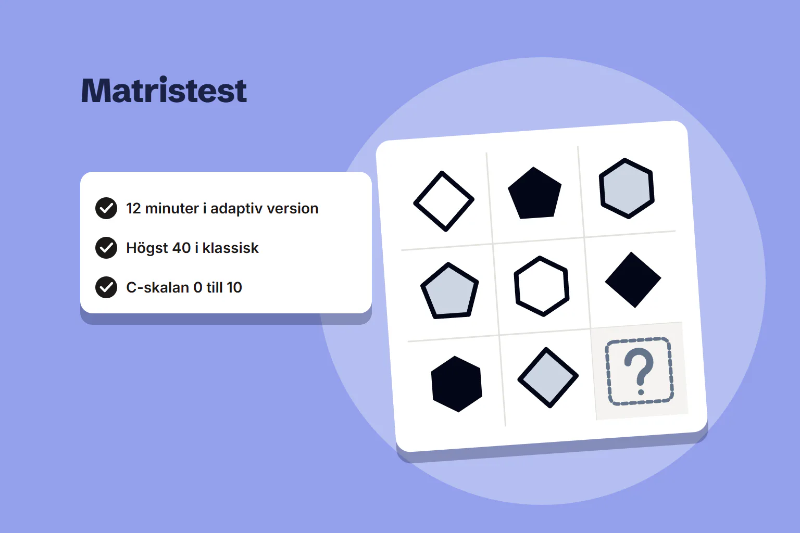

<!-- titel: Skiss artiklarnas reklam | rum: tran -->
<style>
  main img { height: auto; }

  /* ---------- artikelsidans topp: ljus, i klustrets ton, under den mörka menyn ---------- */
  .arttopp { background: var(--ton); padding: 22px 0 44px; }
  .arttopp-rad { display: grid; gap: 30px; align-items: center; }
  .arttopp-rad > * { min-width: 0; }
  .smula { display: flex; flex-wrap: wrap; gap: 4px 8px; font-size: 13px; color: var(--ink-2); }
  .smula a { text-decoration: none; }
  .smula span::before { content: '/'; margin-right: 8px; opacity: .6; }
  .smula span:last-child { overflow: hidden; text-overflow: ellipsis; white-space: nowrap; max-width: 34ch; }
  .arttopp .ey { margin-top: 20px; color: var(--ton-ink); }
  /* artikelns egen rubrik: samma snitt och storlek som i dag (ib-h1) */
  .art-h1 { margin-top: 10px; font-family: var(--disp); font-weight: 800; font-size: clamp(31px, 6.2vw, 50px); line-height: 1.05; letter-spacing: -0.03em; text-wrap: balance; overflow-wrap: anywhere; }
  .arttopp .ingress { margin-top: 18px; font-size: 18px; line-height: 1.5; color: var(--ink-2); max-width: 56ch; }
  .arttopp .knapprad { margin-top: 24px; }
  .forf { display: flex; gap: 12px; align-items: flex-start; margin-top: 26px; padding-top: 18px; border-top: 2px solid var(--kant-stark); }
  .forf i { display: grid; place-items: center; flex: none; width: 40px; height: 40px; border-radius: 50%; background: #F97316; color: #fff; font-style: normal; font-family: var(--disp); font-weight: 800; }
  .forf b { display: block; font-size: 14px; }
  .forf span { display: block; font-size: 13px; color: var(--ink-2); line-height: 1.45; }
  .artbild { width: 100%; max-width: 520px; margin: 0 auto; border-radius: 22px; overflow: hidden; transform: rotate(-1.5deg); border: 2px solid var(--kant-stark); box-shadow: 0 8px 0 var(--kant-stark); background: var(--papper); aspect-ratio: 3 / 2; }
  .artbild img { width: 100%; height: 100%; object-fit: cover; }
  @media (min-width: 1000px) { .arttopp { padding: 32px 0 72px; } .arttopp-rad { grid-template-columns: minmax(0, 1.1fr) minmax(0, .9fr); gap: 64px; } .artbild { transform: rotate(-2deg); } .arttopp .ingress { font-size: 20px; } }

  /* ---------- läsningen: spalt och sidokolumn som i dag ---------- */
  .lasning { padding: 32px 0 56px; }
  .ram2 { display: grid; gap: 40px; }
  .ram2 > * { min-width: 0; }
  .sido { display: none; }
  @media (min-width: 1024px) { .lasning { padding: 56px 0 88px; } .ram2 { grid-template-columns: minmax(0, 1fr) 300px; gap: 72px; } .sido { display: grid; gap: 28px; align-content: start; position: sticky; top: 100px; align-self: start; } }
  .art > * + * { margin-top: 20px; }
  .art > p { font-size: 16px; line-height: 1.7; color: var(--ink-2); max-width: 68ch; }
  .art > p a { color: var(--ink-1); font-weight: 600; text-decoration: underline; text-decoration-color: var(--koppar); text-decoration-thickness: 2px; text-underline-offset: 4px; }
  .art > h2 { margin-top: 52px; font-family: var(--disp); font-weight: 800; font-size: clamp(24px, 4.6vw, 30px); line-height: 1.15; letter-spacing: -0.02em; max-width: 68ch; }
  .art > .snabb { padding: 22px; border-radius: 16px; background: var(--papper); border: 2px solid var(--kant); max-width: 68ch; }
  .art > .snabb b { display: block; font-family: var(--disp); font-size: 18px; }
  .art > .snabb p { margin-top: 10px; font-size: 14.5px; line-height: 1.6; color: var(--ink-2); }
  .art > .rkhall { margin: 36px 0; }
  @media (min-width: 1024px) { .art > p { font-size: 17px; line-height: 1.72; } }
  .toc b { display: block; font-size: 12px; letter-spacing: .08em; text-transform: uppercase; color: var(--ink-3); margin-bottom: 10px; }
  .toc a { display: block; padding: 6px 0 6px 14px; border-left: 2px solid var(--kant-stark); font-size: 14px; line-height: 1.35; color: var(--ink-2); text-decoration: none; }
  .toc a.nu { border-left-color: var(--ton-ink); color: var(--ink-1); font-weight: 600; }

  /* sidokolumnens kort: Premium, med testets klocka i stället för en telefon */
  .sidokort { position: relative; isolation: isolate; overflow: hidden; border-radius: 24px; background: var(--premium); color: var(--vagg-ink); padding: 22px; box-shadow: 0 6px 0 var(--koppar-klack); }
  .sidokort::before { content: ''; position: absolute; z-index: -1; right: -80px; top: -90px; width: 220px; height: 220px; border-radius: 50%; background: var(--premium-2); }
  .sidokort > * + * { margin-top: 10px; }
  .sidokort .ey { color: var(--koppar-ljus); }
  .sidokort .rub { font-family: var(--disp); font-weight: 800; font-size: 20px; line-height: 1.15; letter-spacing: -0.02em; }
  .sidokort p { font-size: 14px; line-height: 1.45; color: var(--vagg-mjuk); }
  .sidokort .tid { display: flex; align-items: center; gap: 12px; margin-top: 14px; padding: 12px; border-radius: 16px; background: rgba(255, 255, 255, .07); border: 2px solid rgba(255, 255, 255, .14); }
  .sidokort .tid .klocka { margin: 0; flex: none; background: #fff; color: var(--ink-1); }
  .sidokort .tid .stapel { flex: 1; height: 8px; background: rgba(255, 255, 255, .16); }
  .sidokort .pris { margin-top: 16px; font-family: var(--disp); font-weight: 800; font-size: 34px; line-height: 1; letter-spacing: -0.03em; color: #fff; }
  .sidokort .pris small { display: block; margin-top: 6px; font-family: var(--text); font-size: 13.5px; font-weight: 500; letter-spacing: 0; color: var(--vagg-mjuk); }
  .sidokort .knapp { margin-top: 16px; }

  /* ---------- reklamrutan: en del, en färg, det riktiga verktyget i liten skala ---------- */
  .rkhall { container-type: inline-size; min-width: 0; }
  .rk { position: relative; isolation: isolate; overflow: hidden; display: grid; gap: 18px; padding: 22px 20px 24px; border-radius: 26px; background: var(--vagg); color: var(--vagg-ink); box-shadow: 0 8px 0 var(--vagg-3); }
  .rk::before { content: ''; position: absolute; z-index: -1; right: -24%; top: -46%; width: 76%; aspect-ratio: 1; border-radius: 50%; background: var(--vagg-2); opacity: .6; }
  .rk > * { min-width: 0; }
  .rk-ey { display: flex; align-items: center; gap: 10px; font-size: 12.5px; line-height: 1.3; font-weight: 700; letter-spacing: .09em; text-transform: uppercase; color: var(--koppar-ljus); }
  .rk-ey .dorr { width: 34px; height: 34px; border-radius: 11px; background: var(--vagg-ink); color: var(--vagg); box-shadow: 0 3px 0 rgba(0, 0, 0, .3); }
  .rk-ey .dorr svg { width: 20px; height: 20px; }
  .rk-rub { margin-top: 12px; font-family: var(--disp); font-weight: 800; font-size: 24px; line-height: 1.12; letter-spacing: -0.02em; color: var(--vagg-ink); text-wrap: balance; }
  .rk-rest { display: grid; gap: 14px; }
  .rk-brod { font-size: 16px; line-height: 1.55; color: var(--vagg-mjuk); }
  .rk-gratis { display: grid; grid-template-columns: 24px 1fr; gap: 10px; align-items: start; padding: 12px 14px; border-radius: 14px; background: rgba(255, 255, 255, .08); border: 2px solid rgba(255, 255, 255, .16); font-size: 15px; line-height: 1.45; font-weight: 500; color: var(--vagg-ink); }
  .rk-gratis::before { content: ''; width: 24px; height: 24px; border-radius: 8px; background: var(--vagg-ink) url("data:image/svg+xml,%3Csvg xmlns='http://www.w3.org/2000/svg' viewBox='0 0 24 24' fill='none' stroke='%231A1A1F' stroke-width='3' stroke-linecap='round' stroke-linejoin='round'%3E%3Cpath d='M6 12.5l4 4 8-9'/%3E%3C/svg%3E") center/16px no-repeat; }
  .rk-gor { display: flex; flex-wrap: wrap; align-items: center; gap: 14px 22px; margin-top: 4px; }
  .rk-gor .lank { color: var(--vagg-ink); font-size: 15px; }
  .rk-paket { font-size: 13.5px; line-height: 1.45; color: var(--vagg-mjuk); }
  .rk-bild { display: grid; justify-items: center; }
  @container (min-width: 620px) {
    .rk { grid-template-columns: minmax(0, 1fr) 272px; grid-template-areas: 'huvud bild' 'rest bild'; gap: 14px 32px; padding: 30px 30px 32px; align-items: start; }
    .rk-huvud { grid-area: huvud; }
    .rk-rest { grid-area: rest; }
    .rk-bild { grid-area: bild; align-self: center; }
    .rk-rub { font-size: 28px; }
    .rk-ram { max-width: 272px; }
  }

  /* gemensamt för instrumenten i rutan */
  .rk .rk-kvar { height: 30px; background: var(--koppar); color: var(--koppar-text); box-shadow: 0 4px 0 var(--koppar-klack); font-size: 13px; white-space: nowrap; }
  .rk .svav { padding: 9px 13px; border-radius: 16px; box-shadow: 0 5px 0 rgba(0, 0, 0, .22); }
  .rk .svav .stor { font-size: 38px; }
  .rk .svav .under { font-size: 12.5px; }
  .rk .ark { box-shadow: 0 7px 0 rgba(0, 0, 0, .24); }

  /* tester: uppgiften i testets ram */
  .rk-ram { width: 100%; max-width: 248px; border-radius: 20px; box-shadow: 0 7px 0 rgba(0, 0, 0, .26); }
  .rk-ram .ram-huvud { padding: 10px 12px 9px; }
  .rk-ram .ram-huvud b { font-size: 14px; }
  .rk-ram .ram-huvud b span { font-size: 12px; }
  .rk-ram .klocka { height: 28px; font-size: 13px; }
  .rk-ram .klocka i { width: 17px; height: 17px; }
  .rk-ram .ram-stapel i { width: 70%; }
  .rk-ram .ram-kropp { padding: 10px; }
  .rk-ram .matris { gap: 5px; padding: 6px; border-radius: 14px; }
  .rk-ram .matris span, .rk-ram .svar span { border-radius: 9px; }
  .rk-ram .matris .tom { font-size: 20px; }
  .rk-ram .svar { gap: 4px; margin-top: 8px; }
  .rk-ram .svar span { border-bottom-width: 3px; }

  /* CV-analys: läsbarhetspoängen på arket */
  .rk-arkhall { position: relative; width: 100%; max-width: 272px; padding: 30px 0 22px 20px; }
  .rk-arkhall .ark { padding: 14px 14px 16px 22px; }
  .rk-arkhall .ark .namn { font-size: 16px; }
  .rk-arkhall .ark .kontakt { font-size: 7.5px; margin-top: 3px; }
  .rk-arkhall .ark h5 { margin-top: 9px; font-size: 10.5px; }
  .rk-arkhall .ark .rad { font-size: 7.5px; margin-top: 5px; }
  .rk-arkhall .ark .l { height: 3.5px; margin-top: 4px; }
  .rk-arkhall .ark .del { margin: 0 -6px; padding: 0 6px 5px; }
  .rk-arkhall .nal { left: -36px; top: 0; width: 28px; height: 28px; font-size: 13px; border-width: 2px; }
  .rk-poang { left: auto; right: -4px; top: 0; --rot: 3deg; transform: rotate(3deg); }
  .rk-arkhall .rk-kvar { position: absolute; right: 6px; bottom: 6px; }

  /* personliga brev: brevet mot annonsens krav */
  .rk-brevhall { position: relative; width: 100%; max-width: 272px; padding: 0 0 22px 46px; }
  .rk-brevhall .ark { padding: 14px 14px 18px; }
  .rk-brevhall .ark .namn { font-size: 15px; }
  .rk-brevhall .ark h5 { margin-top: 7px; font-size: 10px; }
  .rk-brevhall .brevark p { font-size: 7.5px; line-height: 1.5; margin-top: 6px; }
  .rk-brevhall .ark .l { height: 3.5px; margin-top: 4px; }
  .rk-brevhall .annons { left: 0; top: auto; bottom: 40px; width: 140px; padding: 10px 11px 11px; border-radius: 14px; font-size: 12px; box-shadow: 0 5px 0 rgba(0, 0, 0, .24); transform: rotate(-3deg); }
  .rk-brevhall .annons b { font-size: 12.5px; }
  .rk-brevhall .annons li { margin-top: 5px; gap: 5px; white-space: nowrap; }
  .rk-brevhall .rk-kvar { position: absolute; right: 0; bottom: 0; }

  /* Jobbsöket: träffen med skälen */
  .rk-traffhall { width: 100%; max-width: 272px; }
  .rk-traffhall .traff { padding: 14px; border-radius: 18px; box-shadow: 0 6px 0 rgba(0, 0, 0, .24); }
  .rk-traffhall .traff + .traff { margin-top: 10px; }
  .rk-tr-topp { display: grid; grid-template-columns: 44px 1fr; gap: 10px; align-items: center; }
  .rk-tr-topp b { display: block; font-family: var(--disp); font-size: 15.5px; line-height: 1.2; }
  .rk-tr-topp small { display: block; font-size: 12.5px; color: var(--ink-3); }
  .rk-ring { display: grid; place-items: center; width: 44px; height: 44px; border-radius: 50%; background: radial-gradient(circle, #fff 0 57%, transparent 59%), conic-gradient(var(--ton-ink) calc(var(--v) * 1%), var(--ton) 0); font-family: var(--disp); font-weight: 800; font-size: 15px; color: var(--ink-1); }
  .rk-dag { display: inline-flex; align-items: center; height: 26px; margin-top: 10px; padding: 0 10px; border-radius: 999px; background: var(--koppar-mjuk); color: var(--koppar-ink); font-size: 12.5px; font-weight: 700; }
  .rk-darfor { display: block; margin-top: 12px; font-size: 12px; font-weight: 700; letter-spacing: .08em; text-transform: uppercase; color: var(--ton-ink); }
  .rk-skal { display: grid; gap: 6px; margin-top: 8px; }
  .rk-skal li { display: grid; grid-template-columns: 18px 1fr; gap: 8px; align-items: center; font-size: 13px; font-weight: 600; }
  .rk-skal li::before { content: ''; width: 18px; height: 18px; border-radius: 50%; background: var(--ton-ink) url("data:image/svg+xml,%3Csvg xmlns='http://www.w3.org/2000/svg' viewBox='0 0 24 24' fill='none' stroke='%23fff' stroke-width='3.5' stroke-linecap='round' stroke-linejoin='round'%3E%3Cpath d='M6 12.5l4 4 8-9'/%3E%3C/svg%3E") center/11px no-repeat; }

  /* ---------- slutkortet efter texten: Premium med testets ram i stället för tre telefoner ---------- */
  .slut-rad { display: grid; gap: 30px; }
  .slut-rad > * { min-width: 0; }
  .slutbild { position: relative; width: 100%; max-width: 372px; margin: 0 auto; padding: 112px 0 8px 22px; }
  .slutbild .ram { max-width: none; margin: 0; }
  .slutbild .resultat { left: 0; top: 0; width: 206px; --rot: -3deg; transform: rotate(-3deg); padding: 12px 16px 14px; }
  .slutbild .resultat .stor { font-size: 40px; color: var(--ink-1); }
  .slutbild .resultat .under { font-size: 13px; }
  .rattrad { display: grid; grid-template-columns: repeat(5, 1fr); gap: 4px; margin-top: 10px; }
  .rattrad i { height: 20px; border-radius: 6px; background: var(--positiv-mjuk) url("data:image/svg+xml,%3Csvg xmlns='http://www.w3.org/2000/svg' viewBox='0 0 24 24' fill='none' stroke='%232F7D5B' stroke-width='4' stroke-linecap='round' stroke-linejoin='round'%3E%3Cpath d='M6 12.5l4 4 8-9'/%3E%3C/svg%3E") center/12px no-repeat; }
  .rattrad i.ej { background: var(--papper-2); }
  .bank { display: flex; gap: 10px; align-items: center; margin-top: 16px; padding: 12px 14px; border-radius: 14px; background: rgba(255, 255, 255, .07); border: 2px solid rgba(255, 255, 255, .14); font-size: 14.5px; color: var(--vagg-ink); }
  .bank svg { flex: none; width: 22px; height: 22px; color: var(--koppar-ljus); }
  @media (min-width: 1000px) { .slut-rad { grid-template-columns: 1.1fr .9fr; gap: 64px; align-items: center; } .slutbild { margin-right: 0; } }

  /* ---------- skissbladen: det som inte hör till artikelsidan ---------- */
  .skissnot { padding: 14px 16px; border-radius: 16px; border: 2px dashed var(--koppar); background: #FFF7F0; color: var(--koppar-text); font-size: 14.5px; line-height: 1.5; max-width: 760px; }
  .skissnot b { display: block; font-size: 12.5px; letter-spacing: .09em; text-transform: uppercase; color: var(--koppar-ink); }
  .blad { padding: 44px 0; background: var(--golv); }
  .blad + .blad { border-top: 2px solid rgba(0, 0, 0, .06); }
  .bredd-vid { max-width: 1320px; }
  .par { display: grid; gap: 28px; margin-top: 24px; }
  .par > * { min-width: 0; }
  .matt { display: inline-flex; align-items: center; height: 28px; padding: 0 12px; border-radius: 999px; border: 2px dashed var(--kant-stark); font-size: 12.5px; font-weight: 700; color: var(--ink-2); margin-bottom: 16px; }
  .utsnitt .ur { font-size: 12.5px; font-weight: 700; letter-spacing: .09em; text-transform: uppercase; color: var(--ton-ink); }
  .utsnitt > p:not(.ur) { margin-top: 10px; font-size: 16px; line-height: 1.7; color: var(--ink-2); max-width: 68ch; }
  .utsnitt .rkhall { margin: 26px 0; }
  .tel { display: none; }
  @media (min-width: 1100px) {
    .blad { padding: 72px 0; }
    .par { grid-template-columns: minmax(0, 788px) 381px; gap: 71px; align-items: start; }
    .utsnitt > p:not(.ur) { font-size: 17px; }
    .tel { display: block; }
    .telram { width: 381px; border: 3px solid var(--ink-1); border-radius: 42px; background: var(--golv); padding: 26px 16px 30px; box-shadow: 0 8px 0 rgba(0, 0, 0, .18); }
    .telram .utsnitt > p:not(.ur) { font-size: 16px; }
  }

  /* alternativet: väggen behålls, menyn tar klustrets färg */
  .alt { max-width: 760px; margin-top: 24px; border-radius: 22px; overflow: hidden; border: 2px solid rgba(0, 0, 0, .1); box-shadow: 0 8px 0 rgba(0, 0, 0, .14); }
  .alt .nav { position: static; }
  .alt .nav-rad { height: 56px; padding: 0 12px; }
  .alt .nav-val, .alt .nav-in { display: none; }
  .alt .logga { margin-right: auto; font-size: 17px; }
  .alt .knapp-liten { padding: 0 12px; font-size: 14px; }
  .alt .nav-meny { margin-left: 4px; }
  .alt .nav-meny { display: grid; flex: none; }
  .alt .vagg { padding: 22px 18px 30px; }
  .alt .vagg .ey { margin-top: 0; }
  .alt .vagg .art-h1 { font-size: 30px; color: var(--vagg-ink); }
  .alt .vagg p { margin-top: 12px; font-size: 15px; color: var(--vagg-mjuk); }
  .alt .vagg p.ey { font-size: 12.5px; color: var(--koppar-ljus); }
  .alt .vagg p.art-h1 { font-size: 30px; color: var(--vagg-ink); }
</style>

<!--@del nav-->

<main data-rum="tran">
  <!-- Artikelsidans topp. Innehållet är dagens: brödsmula, etikett, H1, ingress, knapp, Läs guiden, författarrad, artikelbild. -->
  <section class="arttopp">
    <div class="bredd arttopp-rad">
      <div>
        <nav class="smula" aria-label="Breadcrumb"><a href="#">Hem</a><span><a href="#">Artiklar</a></span><span>Matrigma test: så fungerar Assessios logiktest, så läser du C-skalan och så övar du gratis</span></nav>
        <p class="ey">Rekryteringstester</p>
        <h1 class="art-h1">Matrigma test: så fungerar Assessios logiktest, så läser du C-skalan och så övar du gratis</h1>
        <p class="ingress">Matrigma test från Assessio tar 12 minuter i adaptiv version och högst 40 i klassisk. Här är formatet, C-skalan 0 till 10, lösta exempel och gratis övning.</p>
        <div class="knapprad">
          <a class="knapp" href="#">Prova fem uppgifter gratis <svg viewBox="0 0 24 24"><use href="#i-pil"/></svg></a>
          <a class="lank" href="#">Läs guiden</a>
        </div>
        <div class="forf"><i>J</i><div><b>Teamet på jobbcoach.ai</b><span>Granskad av HR-experter.</span><span>15 november 2026 · 14 min läsning</span></div></div>
      </div>
      <figure class="artbild"></figure>
    </div>
  </section>

  <section class="lasning">
    <div class="bredd ram2">
      <article class="art">
        <p>Inbjudan kommer från Assessio och testet heter Matrigma. Det står kanske 12 minuter, kanske 40. Du förstår att det handlar om figurer och logik, men inte riktigt vad som väntar eller vad siffran du får efteråt betyder för ansökan.</p>
        <p>Vi har läst det Assessio själva skriver om Matrigma, både på kandidatsidorna och i testets tekniska manual, och lagt ihop det med det vi lärt oss av att bygga egna matristest. Här är de två versionerna, hur en uppgift ser ut, tre lösta exempel, hur C-skalan fungerar och hur du övar gratis under veckan innan.</p>

        <!-- Reklamrutan efter andra stycket, där den står i dag. Rubriken är ett stycke, aldrig h2 eller h3. Bilden är aria-hidden. -->
        <div class="rkhall">
<!--@del artikelreklam-kort-tester-->
        </div>

        <div class="snabb"><b>Snabbsvar: vad är Matrigma test?</b><p>Matrigma är ett icke-verbalt logiktest från svenska Assessio som mäter generell begåvning, alltså förmågan att se samband och lösa nya problem. Varje uppgift visar åtta figurer i ett rutnät, en nionde saknas och du väljer rätt bland sex alternativ. Den vanligaste versionen är adaptiv och tar 12 minuter, med tidsgräns per uppgift.</p></div>

        <h2>Vad är Matrigma och vad mäter testet?</h2>
        <p>Matrigma är Assessios test av generell problemlösningsförmåga. Assessio har sina rötter i Psykologiförlaget, som Sveriges Psykologförbund grundade 1954, och Matrigma är i dag ett av de test du oftast möter vid rekrytering i Sverige. Mer om forskningen, och om de andra testtyperna, finns i vår översikt över <a href="#">logiska tester vid rekrytering</a>.</p>

        <div class="skissnot"><b>Skissblad</b>Här fortsätter artikeln som i dag. Texten, rubrikerna, tabellerna, frågorna och länkarna är orörda och hoppas över i skissen. Efter texten kommer slutkortet nedan.</div>
      </article>

      <aside class="sido">
        <nav class="toc" aria-label="Innehåll"><b>Innehåll</b>
          <a class="nu" href="#">Vad är Matrigma och vad mäter testet?</a>
          <a href="#">Klassisk eller adaptiv Matrigma: vilken får du?</a>
          <a href="#">Hur ser en Matrigma-uppgift ut?</a>
          <a href="#">Tre exempeluppgifter i Matrigma-stil, lösta steg för steg</a>
          <a href="#">Så redovisas resultatet: C-skalan från 0 till 10</a>
          <a href="#">Kan man öva på Matrigma gratis?</a>
        </nav>
        <!-- Sidokolumnens kort: samma ord som i dag. -->
        <section class="sidokort" aria-label="Jobbcoach Premium">
          <p class="ey">Jobbcoach Premium</p>
          <p class="rub">Träna med klockan på innan kallelsen kommer</p>
          <p>Tester, CV, personliga brev, jobbmatchning och Jobbcoachen</p>
          <div class="tid" aria-hidden="true"><span class="klocka"><i></i>4:12</span><span class="stapel koppar"><i style="width:60%"></i></span></div>
          <div class="pris">149 kr<small>i månaden, ingen bindningstid</small></div>
          <a class="knapp knapp-glas knapp-liten knapp-bred" href="#">Se vad som ingår</a>
          <p style="margin-top:14px">Fem uppgifter gratis här. Grundnivån i alla åtta testtyperna gratis med konto, ett test om dagen. Resten ingår i Premium.</p>
        </section>
      </aside>
    </div>
  </section>

  <!-- Slutkortet efter texten (testartiklarna). Samma ord som i dag, rubriken är ett stycke. Bilden är aria-hidden. -->
  <section class="bredd" style="padding-bottom:72px">
    <div class="premium">
      <div class="slut-rad">
        <div>
          <p class="ey">Jobbcoach Premium</p>
          <p class="h2" style="margin-top:12px">Alla nivåer. Klockan på.</p>
          <div class="bank"><svg viewBox="0 0 24 24" fill="none" stroke="currentColor" stroke-width="2" stroke-linecap="round" stroke-linejoin="round"><rect x="4" y="4" width="16" height="16" rx="3"/><path d="M4 10h16M10 4v16"/></svg>Nivån räknas bara på uppgifter du inte sett den senaste månaden.</div>
          <ul class="bockar" style="margin-top:20px">
            <li>Alla åtta testtyperna i grund, avancerad och expert, med förklaring till varje svar</li>
            <li>Övningsprov mot klockan i samma format som Matrigma, Alva, SHL, Aon och I-provet, med automatisk inlämning när tiden är ute</li>
            <li>Det fördjupade personlighetstestet, 120 påståenden</li>
            <li>Dessutom CV-analysen, alla mallar, personliga brev, jobbmatchning och Jobbcoachen</li>
          </ul>
          <div class="pris" style="margin-top:24px">149 kr<small>i månaden, säg upp när du vill</small></div>
          <div class="knapprad" style="margin-top:22px">
            <a class="knapp" href="#">Köp Premium, 149 kr i månaden</a>
            <a class="lank" href="#" style="color:#fff">Se vad som ingår</a>
          </div>
        </div>
        <div class="slutbild" data-rum="tran" aria-hidden="true">
<div class="svav resultat"><div class="stor">12 av 15</div><div class="under">rätt på expertnivån</div><div class="rattrad"><i></i><i></i><i class="ej"></i><i></i><i></i></div></div>
<!--@del artikelreklam-ram-stor-->
        </div>
      </div>
    </div>
  </section>
</main>

<!-- ============ Skissblad: rutans fyra färger, i spaltens bredd och i telefonbredd ============ -->
<section class="blad" data-rum="neutral">
  <div class="bredd bredd-vid">
    <div class="skissnot"><b>Skissblad</b>Nedanför står samma ruta i sina fyra färger, var och en med ett stycke ur en riktig artikel. På dator visas den i artikelspaltens bredd (788 px) och bredvid i telefonbredd (375 px). Rutans rubrik är ett stycke, bilden räknas inte som text.</div>
  </div>
</section>

<section class="blad" data-rum="tran">
  <div class="bredd bredd-vid">
    <div class="par">
      <div><span class="matt">Rekryteringstester · artikelspalten</span>
        <div class="utsnitt"><p class="ur">Ur artikeln Matrigma test</p>
          <p>Vi har läst det Assessio själva skriver om Matrigma, både på kandidatsidorna och i testets tekniska manual, och lagt ihop det med det vi lärt oss av att bygga egna matristest.</p>
          <div class="rkhall">
<!--@del artikelreklam-kort-tester-->
          </div>
          <p>Matrigma är Assessios test av generell problemlösningsförmåga. Assessio beskriver det som ett icke-verbalt test som mäter förmågan att göra logiska kopplingar.</p>
        </div>
      </div>
      <div class="tel"><span class="matt">Telefon, 375 px</span>
        <div class="telram"><div class="utsnitt"><p class="ur">Ur artikeln Matrigma test</p>
          <p>Vi har läst det Assessio själva skriver om Matrigma, och lagt ihop det med det vi lärt oss av att bygga egna matristest.</p>
          <div class="rkhall">
<!--@del artikelreklam-kort-tester-->
          </div>
        </div></div>
      </div>
    </div>
  </div>
</section>

<section class="blad" data-rum="cv">
  <div class="bredd bredd-vid">
    <div class="par">
      <div><span class="matt">CV-analys · artikelspalten</span>
        <div class="utsnitt"><p class="ur">Ur artikeln ATS-vänligt CV</p>
          <p>Innan en rekryterare läser ditt CV har ett datorprogram redan gjort det. Programmet heter ATS, Applicant Tracking System, och det används idag i praktiken av alla svenska arbetsgivare som tar emot ansökningar via en karriärsida.</p>
          <div class="rkhall">
<!--@del artikelreklam-kort-analys-->
          </div>
          <p>Ett ATS är arbetsgivarens system för att ta emot, lagra och hantera ansökningar. Arbetsförmedlingen beskriver det som en avancerad sökmotor: systemet läser ditt CV, plockar ut kompetenser, erfarenheter och nyckelord, och jämför dem med kravprofilen i annonsen.</p>
        </div>
      </div>
      <div class="tel"><span class="matt">Telefon, 375 px</span>
        <div class="telram"><div class="utsnitt"><p class="ur">Ur artikeln ATS-vänligt CV</p>
          <p>Innan en rekryterare läser ditt CV har ett datorprogram redan gjort det.</p>
          <div class="rkhall">
<!--@del artikelreklam-kort-analys-->
          </div>
        </div></div>
      </div>
    </div>
  </div>
</section>

<section class="blad" data-rum="brev">
  <div class="bredd bredd-vid">
    <div class="par">
      <div><span class="matt">Personliga brev · artikelspalten</span>
        <div class="utsnitt"><p class="ur">Ur artikeln Personligt brev: så beskriver du dig själv</p>
          <p>Att bara rada upp adjektiv som "driven", "noggrann" och "social" räcker sällan. Arbetsgivare vill se bevis. De vill förstå hur dina egenskaper yttrar sig i praktiken och hur dina kompetenser matchar de specifika utmaningarna i rollen.</p>
          <div class="rkhall">
<!--@del artikelreklam-kort-brev-->
          </div>
          <p>Orden blandas ofta ihop, men de svarar på två olika frågor. En kompetens är något du kan och har lärt dig att göra: projektledning, bokföring, kundbemötande, ett visst dataspråk.</p>
        </div>
      </div>
      <div class="tel"><span class="matt">Telefon, 375 px</span>
        <div class="telram"><div class="utsnitt"><p class="ur">Ur artikeln Personligt brev</p>
          <p>Att bara rada upp adjektiv som "driven", "noggrann" och "social" räcker sällan. Arbetsgivare vill se bevis.</p>
          <div class="rkhall">
<!--@del artikelreklam-kort-brev-->
          </div>
        </div></div>
      </div>
    </div>
  </div>
</section>

<section class="blad" data-rum="jobb">
  <div class="bredd bredd-vid">
    <div class="par">
      <div><span class="matt">Jobbsöket · artikelspalten · nytt kort</span>
        <div class="utsnitt"><p class="ur">Ur artikeln Söka jobb via mejl</p>
          <p>Mejlet är fortfarande en av de vanligaste vägarna in när du söker jobb, och det mest underskattade momentet i hela ansökan. Många lägger timmar på CV:t och personliga brevet, och slänger sedan iväg själva mejlet på trettio sekunder.</p>
          <div class="rkhall">
<!--@del artikelreklam-kort-jobb-->
          </div>
          <p>Det betyder att ditt mejl har två jobb. Det är kanalen för att svara på annonser, och det är verktyget som når jobben som aldrig annonseras. Samma hantverk bär i båda fallen.</p>
        </div>
      </div>
      <div class="tel"><span class="matt">Telefon, 375 px</span>
        <div class="telram"><div class="utsnitt"><p class="ur">Ur artikeln Söka jobb via mejl</p>
          <p>Mejlet är fortfarande en av de vanligaste vägarna in när du söker jobb.</p>
          <div class="rkhall">
<!--@del artikelreklam-kort-jobb-->
          </div>
        </div></div>
      </div>
    </div>
  </div>
</section>

<section class="blad" data-rum="neutral">
  <div class="bredd bredd-vid">
    <div class="skissnot"><b>Skissblad: om väggen behålls</b>I dag står artikelns topp på en mörk vägg i klustrets färg. Skissen ovan ritar toppen ljus, med menyn i grafit. Så här ser det andra valet ut: väggen står kvar och menyn tar klustrets färg, som på verktygssidorna.</div>
    <div class="alt" data-rum="tran">
      <header class="nav"><div class="nav-rad"><a class="logga" href="#"><i>J</i>Jobbcoach<span>.ai</span></a><a class="knapp knapp-liten" href="#">Skapa konto</a><span class="nav-meny"><svg viewBox="0 0 24 24"><use href="#i-meny"/></svg></span></div></header>
      <div class="vagg"><p class="ey">Rekryteringstester</p><p class="art-h1">Matrigma test: så fungerar Assessios logiktest</p><p>Matrigma test från Assessio tar 12 minuter i adaptiv version och högst 40 i klassisk.</p></div>
    </div>
  </div>
</section>

<!--@del fot-->
